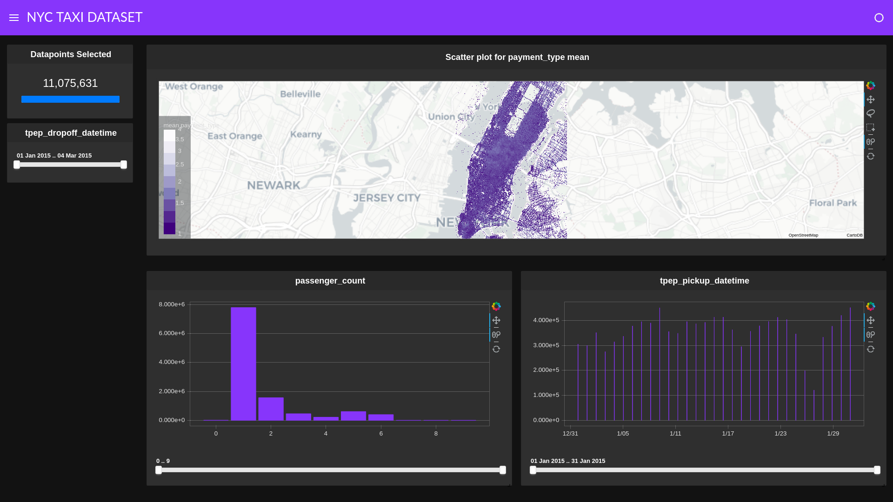

NYC Taxi data using dask_cudf¶
Import cuxfilter¶
[ ]:
from cuxfilter import charts
import cuxfilter
from bokeh import palettes
from cuxfilter.layouts import feature_and_double_base
import cudf, dask_cudf
from dask.distributed import Client, wait
from dask_cuda import LocalCUDACluster
cluster = LocalCUDACluster()
client = Client(cluster)
client
[ ]:
#update data_dir if you have downloaded datasets elsewhere
DATA_DIR = './data'
Download required datasets¶
[ ]:
from cuxfilter.sampledata import datasets_check
datasets_check('nyc_taxi', base_dir=DATA_DIR)
preprocess the data¶
[ ]:
cudf_df = cudf.read_csv(DATA_DIR + '/nyc_taxi.csv')
from pyproj import Proj, Transformer
# Apply transformation
transform_4326_to_3857 = Transformer.from_crs('epsg:4326', 'epsg:3857')
cudf_df['dropoff_x'], cudf_df['dropoff_y'] = transform_4326_to_3857.transform(
cudf_df['dropoff_latitude'].values_host, cudf_df['dropoff_longitude'].values_host
)
cudf_df = cudf_df.drop(['dropoff_latitude', 'dropoff_longitude'], axis=1)
cudf_df = cudf_df.dropna(axis=0)
# Filter over Manhattan
cudf_df = cudf_df[
(cudf_df.dropoff_x > -8239910.23) & (cudf_df.dropoff_x < -8229529.24) & (cudf_df.dropoff_y > 4968481.34) & (cudf_df.dropoff_y < 4983152.92)
]
cudf_df.tpep_pickup_datetime = cudf.to_datetime(cudf_df.tpep_pickup_datetime, format="%Y-%m-%d")
cudf_df.tpep_dropoff_datetime = cudf.to_datetime(cudf_df.tpep_dropoff_datetime, format="%Y-%m-%d")
cudf_df.head()
Convert cudf df to dask_cudf df¶
[ ]:
cudf_df = dask_cudf.from_cudf(cudf_df, npartitions=2).persist()
Read the dataset¶
[ ]:
cux_df = cuxfilter.DataFrame.from_dataframe(cudf_df)
Define charts¶
Uncomment the below lines and replace MAPBOX_TOKEN with mapbox token string if you want to use mapbox map-tiles. Can be created for free here -https://www.mapbox.com/help/define-access-token/
[ ]:
#from cuxfilter.assets.custom_tiles import get_provider, Vendors
#tile_provider = get_provider(Vendors.MAPBOX_LIGHT, access_token=MAPBOX_TOKEN)
[ ]:
chart1 = charts.scatter(x='dropoff_x',
y='dropoff_y',
aggregate_fn='mean',aggregate_col='payment_type', pixel_shade_type='log', legend_position='top_right',
tile_provider="CartoLight", x_range=(-8239910.23,-8229529.24), y_range=(4968481.34,4983152.92)), unselected_alpha=0.2
chart2 = charts.bar('passenger_count', data_points=9)
chart3 = cuxfilter.charts.bar('tpep_pickup_datetime')
chart4 = cuxfilter.charts.date_range_slider('tpep_dropoff_datetime')
Create a dashboard object¶
[ ]:
d = cux_df.dashboard([chart1, chart2, chart3], sidebar=[chart4], layout=feature_and_double_base, theme=cuxfilter.themes.rapids, title= 'NYC TAXI DATASET')
[ ]:
#run dashboard inline within the notebook cell
d.app()
Starting the dashboard¶
d.show(‘current_notebook_url:current_notebook_port’) remote dashboard
d.app() inline within the notebook cell
Incase you need to stop the server:
d.stop()
[11]:
# preview
await d.preview()

Export the queried data into a dataframe¶
[ ]:
queried_df = d.export()